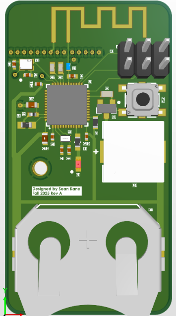
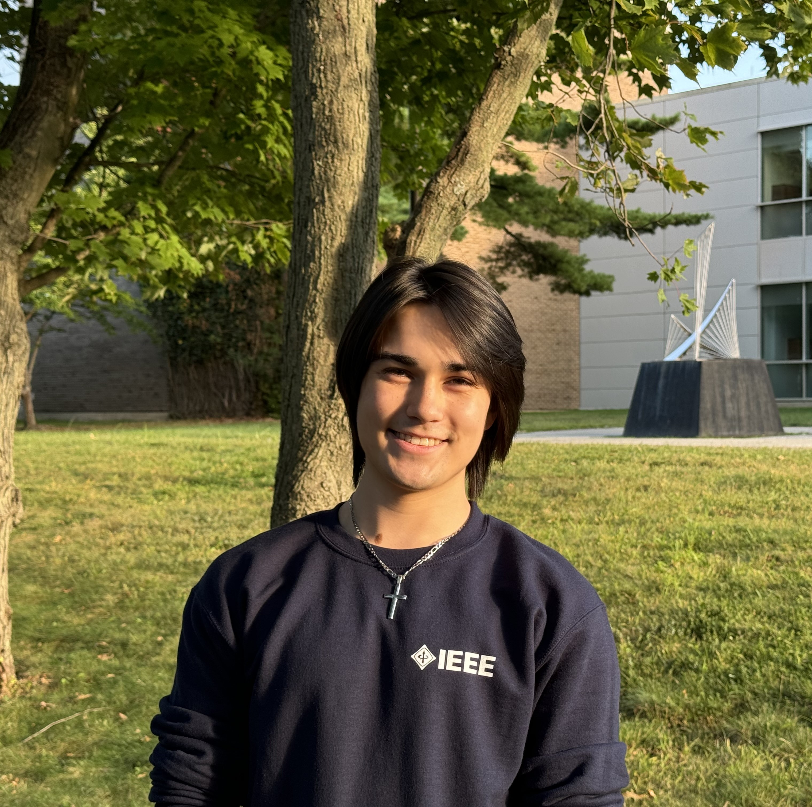

A compact four-layer nRF52832 board with a 2.4 GHz antenna and embedded C firmware for Finder and Game modes.
Explore board in 3DElectrical Engineer
Stony Brook University
Digital Hardware Design & Verification
Focused on FPGA/RTL design and verification in SystemVerilog and VHDL, with project experience in hardware acceleration, VLSI, and PCB design.
01 / Projects
Projects in digital hardware design,
verification, and circuit design.

A compact four-layer nRF52832 board with a 2.4 GHz antenna and embedded C firmware for Finder and Game modes.
Explore board in 3D
A 16-bit LFSR signature analyzer with modular control logic and real-time display output, validated on a Xilinx FPGA.
Explore the systemSynthesizable SystemVerilog for 2D convolution, with randomized verification in QuestaSim and synthesis targeting Nangate 45 nm.
An 8-bit synchronous carry-select adder in Cadence, connecting datapath architecture with VLSI design.
02 / Experience
Built a Python CLI pipeline that converted SystemRDL into IP-XACT, VHDL register RTL, C headers, HTML documentation, and UVM RAL in one command. Customized register metadata and packaged the toolchain for offline Windows and Linux deployment.
Designed an 8-layer mixed-signal ROV control board stackup, partitioning 12 V, 8 V, and 5 V power, ground, and signal layers for motor control, embedded compute, and low-noise sensors.
Defined embedded firmware requirements alongside the hardware architecture, mapping GPIO, PWM, SPI, I2C, and UART interfaces to meet timing, control, and system integration requirements.
May 2025 – May 2026
Oversaw the planning and execution of 20+ events across Fall 2025 and Spring 2026, including technical workshops, professional development sessions, and social activities. Prepared weekly agendas for a 10-member executive board, delegated tasks, and coordinated responsibilities.
Coordinated technical setup, scheduling, and logistics for the Spring 2025 IEEE Region 1 & Region 2 Student Activities Conference with approximately 300 attendees. Helped prepare and review weekly board agendas.
Managed a club budget of over $3,700 from student government and industry sponsors. Maintained transaction records, prepared financial statements and invoice requests, and supported technical and professional events.
Represented first-year students at weekly executive board meetings and helped organize campus events. Facilitated a social event with over 40 attendees and participated in electrical engineering workshops.
Built a Power BI system for equipment and sensor data, automating asset tracking and usage statistics. Developed Python automation to migrate aerial survey data to OpenSpace Air and expand access across the company.
03 / About Me
I’m an Electrical Engineering student at Stony Brook University, focused on digital hardware design and verification.
My experience includes FPGA/RTL development in SystemVerilog and VHDL, simulation-based verification, VLSI, and PCB design. Current projects include a 2D convolution accelerator and a pipelined synchronous 8-bit carry-select adder.
At Collins Aerospace, I developed Python-based automation for FPGA/ASIC register specifications and verification artifacts. As Hardware Control Systems Lead on Stony Brook’s robotics team, I designed an 8-layer mixed-signal ROV control board stackup. As IEEE student chapter President, I led technical workshops on microcontrollers, communication protocols, and hardware interfacing.
My current coursework is expanding my experience in SystemVerilog RTL design and verification, hardware acceleration, transistor-level CMOS design, SPICE simulation, low-power design, datapath and memory design, and VLSI design methodologies.

04 / Contact
Contact me about opportunities in digital hardware design,
RTL development, and verification.